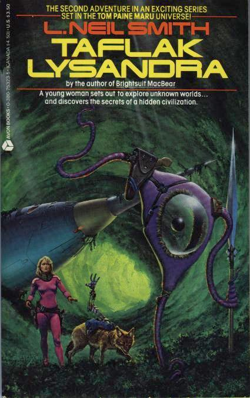

Taflak Lysandra
by L. Neil Smith
In the first of six projected sequels to Brightsuit MacBear, testing a marvelous "subfoline" craft, young Elsie Nahuatl (last seen in Tom Paine Maru) becomes lost amidst the bizarre collectivist cultures which lurk beneath the planet Majesty's "Sea of Leaves" with her father -- a cybernetically-enhanced coyote.
New York: Avon Books, 1988
230 pages, mass-market paperback
Library of Congress Catalog Card Number: 88-91949
ISBN 0-380-75323-5
First Avon Books Printing: December 1988
Front cover illustration by Richard Hescox